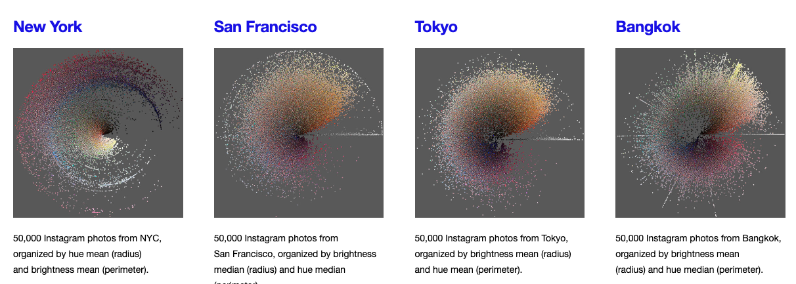

Related Work
![]()
While the two visual platforms Instagram and TikTok, are relatively new, plenty of research has already been published about both platforms. A naive search on google scholar for the term instagram analysis results in 4.180.000 results, for tiktok analysis in 54.800 results. We are going to take a look at current literature review studies, concentrating on Instagram. The goal for this chapter is to identify major research areas in (visual) social media research. Beyond themes, trends, and topics, review studies also offer methodological overviews on how to study social media platforms.

Additionally, we will explore tools like Publish or Perish that help in creating one’s own literature review. The Related Work section forms a pivotal foundation for high-quality scientific research, and a successful project report.
The intent of this article is to provide a brief overview of the field of computational social media analysis, tailored for my Winter 2023/24 seminar. As such, please do not regard the content of this page as a definitive scientific piece. Instead, view it as a compass to guide and inspire your own research endeavors.
Literature Reviews
Rejeb et al. (2022) compiled a bibliometric analysis of 2,242 publications collected from the Web of Science1 database. They cover publications dated from 2013–2021 and outline 22 prior review studies, most of them concentrating on a smaller scope. Topics of these reviews include: Health, Psychology, Journalism, Mental Health, Body Image, and Marketing. Overall, their bibliographic study found similar themes in the current research: Some articles analyse the use of Instagram in the context of business, marketing, and travel. Others take a psychological angle and look into personality traits or health issues. They also found scholarly articles on privacy concerns and Instagram. Here’s some research interests they encountered in their review:
- How does Instagram affect social and health issues, such as social comparison, eating disorders, addiction, and suicidal ideation?
- How does Instagram facilitate and transform healthcare?
- What are the security and privacy concerns that result from the use of Instagram?
- How does Instagram inter-relate with other social media platforms, such as Facebook and Twitter?
- What are the emerging research trends and frontiers in Instagram research?
They found researchers to use a multitude of methods, including surveys and questionnaires; content analysis to examine user-generated content; experimental designs to test the effects of Instagram use on users’ psychological states and behaviors; and qualitative methods, such as interviews and focus groups, to gain in-depth insights into users’ experiences with Instagram.
Interestingly the bibliometric study seems to overlook a larger portion of research covering political communication on Instagram. Bast (2021) concentrates on this exact topic, she reviewed 37 studies on Instagram usage by politicians, parties, and governments. 30 studies were concerned with the Instagram use of political actors. They explored different aspects, like the self-presentation of politicians, mobilization and campaign information or whether they used Instagram to talk about political issues or interact with voters. Some of the studies use a comparative approach, e.g. comparing the Instagram activity of multiple actors, others compared the Instagram usage of political actors across different countries, political systems, or election/non-election periods (Bast 2021).
From a methodological point of view the review of visual content analysis for image-based social media by Milanesi and Guercini (2020) is quite interesting: They included 29 articles in their study and explored the platforms, that have been invastigated as well as the approach, whether the analysis was manual or automated. Outstanding at first is the large share of projects that have been classified as using automated approaches. Upon closer inspection, they have also classified the use of qualitative data analysis software like NVivo, as automation. Few projects, however, have already been using deep learning and computer vision based approaches for image analysis. Finally, the paper suggests that a mixed methodology that combines a netnographic approach, a research methodology that adapts ethnographic research techniques to the study of online communities, for textual and visual data collection in online communities and textual and visual content analysis may provide new insights for branding or destination management research. Overall, they argue for a combined analysis of textual and visual data. It should be noted, that their review focuses on literature from marketing research.
Overall, each of the outlined reviews has a different focus. Taken together, they display a large variety of different fields and questions, which Instagram content helps to answer. We can use these literature reviews in two way: We can identify patterns of how to approach social media content, how to operationalize, what questions to ask, what methods to use, and – looking at the future work sections of the reviews and the reviewed papers, where to pick up! Secondly, the literature review helps us to identify interesting literature for our own related work section and reading.
Selected Articles
Throught the next passages I’d like to introduce few interesting pieces. First, I’ll outline some of the first papers concerned with Instagram content. Thereafter we proceed to take a look at Instagram stories and ephemeral content in social media.
One of the first analyses of Instagram content was published in 2013: The article explores how the interfaces of social media platforms like Instagram shape user interactions and the creation and sharing of media. Through computational analysis and visualizations of Instagram content, the authors study social and cultural patterns. They compare visual data from 13 global cities and provide a detailed analysis of photos from Tel Aviv, Israel, showing how such visualizations can offer insights into social, cultural, and political activities in specific locales over time (Hochman and Manovich 2013).

Shortly afterwards, in 2014, one of the most cited studies about Instagram was published. It provides a comprehensive analysis of Instagram photo content and user types, using computer vision techniques and clustering. The authors collected Instagram data using the Instagram API and developed a coding scheme for categorizing the photos. They identified eight popular photo categories and five distinct types of Instagram users in terms of their posted photos. They also found that a user’s audience (number of followers) is independent of their shared photos on Instagram. This study was the first in-depth analysis of content and users on Instagram (Hu, Manikonda, and Kambhampati 2014).
Instagram Stories
Stories, as a special format due to their ephemeral nature, and have often been evaded academic research. The freature has been introducted of Instagram Stories in 2016 Leaver, Highfield, and Abidin (2020). An early analysis of stories is part of a master thesis on Snapchat and Instagram: Through qualitative content analysis, observation and in-depth interviews Amancio (2017) found four narrative elements used by Snapchat and Instagram storytellers to tell their stories and construct a narrative. Looking at Instagram specifically, Bainotti, Caliandro, and Gandini (2020) investigated 292 Stories by private users using an ethnographic coding approach. They claim to have identified specific grammars by matching the content and context-of-use, the two main ones are: “a grammar for documentation and a grammar for interaction”. Other areas of interest for stories were ephemeral journalism (Vázquez-Herrero, Direito-Rebollal, and López-Garcı́a 2019) and Female Atheletes’ self-presentation (Li et al. 2021). Finally, just recently Towner and Muñoz (2022) published a first analysis of political communication in Instagram Stories, studying the stories published by the two U.S. presidential candidates in the 2020 campaign. The authors took a marketing perspective, and identified several flaws of the campaign: missed opportunities to share user-generated content, and inconsistencies to communication norms of the ephemeral format.
Overall, stories have been explored by researchers from different domains. The ephemeral character sticks out in a world where the effort for deleting photos may be more expensive than keeping them (Mayer-Schönberger 2011). Thus, I see potential for many different cultural and societal questions to be answered by looking at this type of content, and great potential for using stories in our semester projects. In contrast to most other social media content, stories need to be collected in real time. This is a challenge for research and limits our questions to material that we may collect throughout the seminar.
TikTok
I have yet concentrated on literature about Instagram. An update for this section will be the outcome of our seminar!
Recommended Reading
| Reference | Title | Note |
|---|---|---|
| Bainotti, Caliandro, and Gandini (2020) | From archive cultures to ephemeral content, and back: Studying Instagram Stories with digital methods | This paper explores Instagram stories and their collection. The authors conduct a content analysis and derive different grammars for private Instagram stories. |
| Haßler, Kümpel, and Keller (2021) | Instagram and political campaigning in the 2017 German federal election. A quantitative content analysis of German top politicians’ and parliamentary parties’ posts | A detailed analysis of the 2017 election campaign showcasing theory-driven operationalization and (manual) content analysis. |
| Omena, Rabello, and Mintz (2020) | Digital Methods for Hashtag Engagement Research | Introduction of a multilayer hashtags engagement research framework paired with the concept of grammars of action. Demonstrates an interesting concept of grouping users. |
| Rettberg (2018) | Snapchat: Phatic Communication and Ephemeral Social Media | One of the first scholarly articles on ephemeral stories, originally introduced by Snapchat. |
| Sánchez-Querubı́n et al. (2023) | Political TikTok: Playful performance, ambivalent critique and event-commentary | An interesting blueprint for doing research of political communication on TikTok; take a special look at the coding variables! |
| … | to be continued! | … |
Footnotes
Accessible via VPN / on campus (when connected to eduroam).↩︎
Reuse
Citation
@online{achmann-denkler2023,
author = {Achmann-Denkler, Michael},
title = {Related {Work}},
date = {2023-10-23},
url = {https://social-media-lab.net/getting-started/related-work.html},
doi = {10.5281/zenodo.10039756},
langid = {en}
}